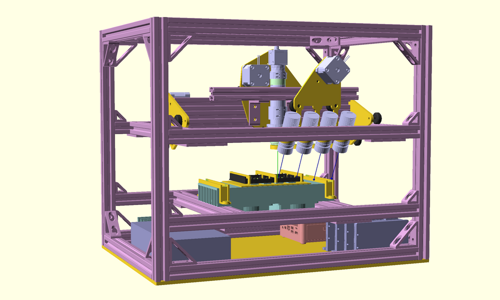

Real Time Digital PCR Machine

Most current digital PCR machines only measure endpoints, you set up the reaction, run X cycles and then measure the fluorescence of the wells/droplets, however for some applications it is very useful to be able to follow the kinetics of the reaction in real time. An example is optimizing LAMP reactions, it's good to know what the success fraction is (the endpoint measurement), but being able to also measure the time to result is even better. This setup was designed to be capable of 4 channel fluorescence imaging in real time of reactions in the wells of a Thermo-Fisher MAP16 digital PCR plate.